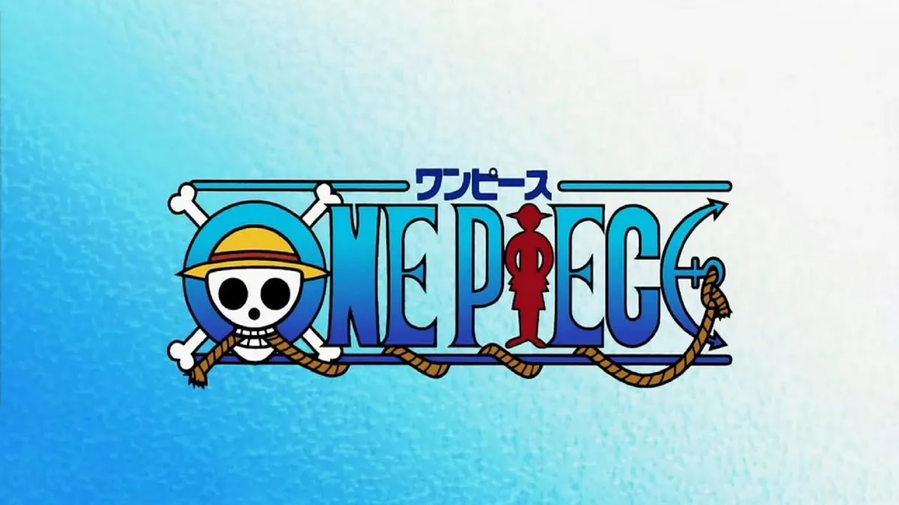

This is Paragraph
heading h1 to h6
I Am In The Search Of One Piece Come Join Me
Wealth, fame, power.
Gold Roger the king of the pirates obtained this and everything else the
World had to offer. And his dying words drove countless souls to the seas.
“You want my treasure? You can have it! I left everything I gathered
Together in one place. Now you just have to find it! ”
These words lured men to the grand line, pursuing dreams greater than they
Ever dared to imagine. This is the time known as the great pirate era.
Italic-text
Bold Text
Highlighted text
Emphasized text
Bolded text
X2+Y2=Z2
H2O
Underlined text